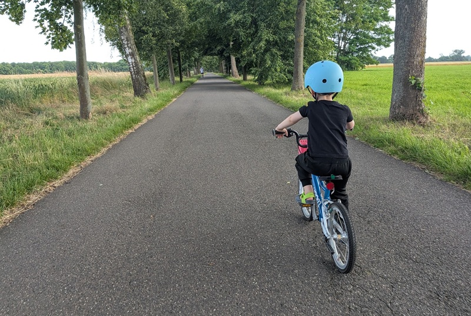

Man fährt ja auch nicht ohne Helm
Sicherheitshärtung, Performance, Datensicherheit, Code-Effizienz. Ich habe beim letzten Mal versprochen, mein Claude-Code-Setup für bessere Code-Qualität aufzudröseln.

Ein Nachmittag reicht für einen Prototyp. Aber ist er auch sicher? Schnelles Bauen mit KI heißt erstmal nur: es funktioniert. Ob es auch was aushält, lasse ich von der KI im Anschluss checken. Immer und immer wieder.
Ich hab die KI gefragt, wie ich das sicherer hinkriege. Antwort: mit Audits. Also hat sie meinen Code analysiert.
Daraus ist über die Zeit ein ganzes Setup geworden. Jedes Projekt hat eigene Regeln, die immer gelten, egal welche KI gerade dran arbeitet. Dazu kommen Gewohnheiten, die projektübergreifend mitlaufen. Und ein Gedächtnis, das sich über Sessions und Projekte hinweg merkt, was schon geprüft, entschieden oder gebaut wurde. Ohne das würde jede neue Session wieder bei null anfangen.
Der KI fallen erstaunlich viele Schwächen auf, wenn man sie nur explizit danach fragt. Darüber hinaus gibt es aber auch kleine Anleitungen, die der KI genau zeigen, welche Gefahrenstellen sie im Code abklopfen soll: Skills.
Ein festes Setup macht aus Vibecoding kein Enterprise-Projekt. Aber es macht aus einem Nachmittag Bauzeit einen ehrlicheren Nachmittag.
Was bei mir mitläuft
Repo-eigene Regeln. Jedes Projekt hat seine eigene CLAUDE.md. Die gilt bindend nur dort. Quality Gates, Security-Checkliste, Umgang mit Secrets, Definition of Done. Bleibt bewusst im Repo, wird nirgends kopiert.
Globale Gewohnheiten. Eine zweite CLAUDE.md, die repo-übergreifend gilt. Keine Projekt-Spezifika, nur Dinge, die ich in jeder Session will. Zum Beispiel: vor größeren Aufgaben kurz ins Wiki schauen, ob's dazu schon was gibt.
Das Wiki. Ein Projekt in Todoteck, das sich die KI selbst pflegt. Läuft als Alternative zu klassischem RAG. Mehr dazu in meinem Post über das Wiki. Eine Notiz darin führt Buch über alle externen Skill-Sammlungen, die ich mir angeschaut hab, inklusive der Regel: erst prüfen, ob ein Skill die Aufgabe schon abdeckt, bevor ich bei null anfange.
Skills, die direkt für Codequalität greifen:
- clean-code — Uncle-Bob-Prinzipien. Sprechende Namen, kleine Funktionen, Kommentare vermeiden statt schlechten Code kommentieren. Stammt aus ClawForge.
- security-first-2025 — Security beim Bash-Scripting. Input-Validierung, keine Command-Injection, sichere Temp-Dateien, Secrets niemals hardcoden. Eigener Skill, zum Download.
- simplify — Review auf unnötige Komplexität. Keine Bugsuche, reine Aufräumarbeit.
- security-review — komplettes Security-Review der offenen Änderungen im Branch.
- review — Review eines GitHub Pull Requests.
- frontend-design — produktionsreife Interfaces, ohne dass man der KI-Optik ansieht.
- home-assistant-best-practices — verhindert Anti-Pattern in Automations, etwa device_id statt entity_id. Eigener Skill, zum Download.
- mcp-builder — Leitfaden für eigene MCP-Server.
- skill-creator — zum Bauen eigener Skills.
- writing-skills — testet Skills mit Subagenten, bevor sie scharf geschaltet werden, aus dem obra/superpowers-Framework.
- changelog-generator — verwandelt Git-Commits in verständliche Release-Notes. Eigener Skill.
Installierte Plugin-Sammlungen (Marketplace):
- addyosmani/agent-skills (Addy Osmani, 32 Skills) — Engineering-Lifecycle, unter anderem Security- und A11y-Checklisten.
- mukul975/Anthropic-Cybersecurity-Skills (Community, 817 Skills) — über 800 Security-Skills, gemappt auf MITRE ATT&CK.
- alirezarezvani/claude-skills (Alireza Rezvani, 345 Skills) — breite Multi-Domain-Sammlung, davon nutze ich nur wenige gezielt.
- anthropics/claude-cookbooks (Anthropic) — offizielle Notebooks, eher Referenz als Skill.
Ohne Installation. ui-skills.com läuft nicht als Plugin, sondern als CLI. Ruf ich live auf, wenn ich an UI-Sachen arbeite. Lädt maximal drei Skills gleichzeitig, kein globaler Installationsschritt nötig.
Trend-Check. Lohnt sich, regelmäßig einen Blick auf Trendshift zu werfen. Zeigt aktuell angesagte GitHub-Repos, darunter öfter mal was, das für genau dieses Setup relevant wird.